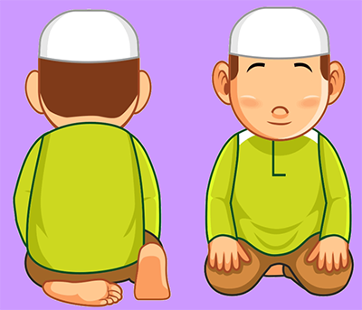

-
Dzikir
Do'a
+
Duduk Antara 2 Sujud
Menu

Penjelasan
Setelah sujud pertama, kemudian bangkit duduk (iftirosy) dengan cara kaki kiri diduduki dan kaki kanan ditegakkan serta membaca "Allahu Akbar"
Bacaan Duduk Antara 2 Sujud yaitu:
رَبِّ اغْفِرْ لِي ، وَارْحَمْنِي ، وَاجْبُرْنِي ، وَارْفَعْنِي ، وَارْزُقْنِي ، وَاهْدِنِي.
“Robbighfirlii warhmanii, wajburnii, warfa’nii, warzuqnii, wahdinii”
Artinya: Ya Allah ampunilah aku, rahmatilah aku, cukupkanlah aku, tinggikanlah derajatku, berilah rezeki dan petunjuk untukku).” (HR. Ahmad 1: 371. Syaikh Syu’aib Al Arnauth mengatakan bahwa haditsnya hasan).